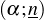
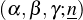
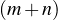
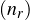
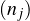

حول إحصاءات شبكات الشوارع الحضرية
jerome.benoit@nyu.edu
1 مقدمة
نسعى إلى فهم إحصاءات شبكات الشوارع الحضرية. ومن شأن هذا الفهم أن يحسن السياسات الحضرية عموماً والنقل الحضري خصوصاً. نبحث في هذا العمل شبكات الشوارع الحضرية بوصفها كلاً واحداً ضمن إطاري فيزياء المعلومات [9] والفيزياء الإحصائية [7].
على الرغم من أن عدد المرات التي يتقاطع فيها طريق طبيعي مع طريق آخر قد لوحظ على نطاق واسع أنه يتبع توزيع باريتو احتمالياً متقطعاً [3] بين المدن ذاتية التنظيم [1, 4, 8]، فإن جهوداً قليلة جداً ركزت على اشتقاق إحصاءات شبكات الشوارع الحضرية من مبادئ أساسية. ويشير الطريق الطبيعي (أو الطريق) هنا إلى بديل معتمد للشارع ذي “الاسم” [8].
يشدد نهجنا صراحةً على هرمية الطرق والتقاطعات في شبكة الشوارع الحضرية الأصلية بدلاً من تقسيمها ضمنياً وفقاً لذلك إلى شبكتين ثنائيتين لكن متمايزتين. فمعظم الدراسات تسعى بالفعل إلى تحويل شبكة الشوارع الحضرية الأصلية إلى شبكة طريق-طريق [8] ووصف توزيع احتمال درجاتها.
وتنسجم هذه النظرة الكلية التي اعتمدها مجتمع الدراسات الحضرية [1, 2] أيضاً مع طريقة التفكير في فيزياء المعلومات [9]، التي تقوم على علاقات الترتيب الجزئي [5, 9]. وهنا تنبثق علاقة الترتيب الجزئي من علاقة وقوع الطرق على التقاطعات. ومن ثم فإن تطبيق فيزياء المعلومات يمكّننا من تصور شبكات الشوارع الحضرية بوصفها أنظمة اجتماعية متطورة خاضعة لتوازن إنتروبي يشبه التوازن الباريتوي الملحوظ فعلياً بين مدن البلد الواحد [6].
2 المنهج
تُختزل العلاقة التي تربط الطرق الطبيعية والتقاطعات اختزالاً تقابلياً إلى بنية جبرية تعرف باسم شبكة غالوا [5]. ثم، بفرض قيود اتساق طبيعية، تمكّننا فيزياء المعلومات [9] ليس فقط من تقييم شبكات الشوارع الحضرية بل كذلك من تعيين توزيع احتمالي، وفي نهاية المطاف، مقياس معلومات. ويتضح أن شبكات الشوارع الحضرية تختزل بسلاسة إلى شبكات غالوا ذات طبقتين غير تافهتين: فالطرق الطبيعية تشكل الطبقة السفلى والتقاطعات تشكل الطبقة العليا، بينما تكون علاقة الترتيب الجزئي علاقة “مرور عبر”. وهذا يجعل شبكات الشوارع الحضرية تصبح نموذجاً مبسطاً للبراديغم الناشئ.
ثم يتحقق الانتقال من الهرمية الغالواية إلى الاتساق الباريتوي باستدعاء مبدأ الإنتروبيا العظمى لجينز [7] مع اتخاذ العزم اللوغاريتمي الأول قيداً وحيداً واصفاً ومع اعتماد جهلنا الكامل معرفةً ابتدائية. ويعبّر التوزيع الاحتمالي الأكثر معقولية المقابل لكل طريق طبيعي أو تقاطع، دون تمييز، عن احتمال امتلاك عدد معين من الحالات المتساوية الاحتمال؛ وهو توزيع باريتو احتمالي متقطع تكون إنتروبيته هي العزم اللوغاريتمي الأول المفروض، كما هو مطلوب. ويجب في النهاية تفكيك هذا التوزيع الاحتمالي بالنظر إلى بنية شبكة غالوا والقواعد الجبرية التي تفرضها نظرية فيزياء المعلومات. وبعبارة أخرى، لا يزال ينبغي إسناد معنى فيزيائي إلى هذا التقييم.
ويتيح لنا افتراض نموذج ثنائي الحدين تقريبي ولاحق لعملاء مقترنين بروح نموذج المدينة [6] أن نتنبأ أخيراً بإحصاءات شبكات الشوارع الحضرية. إذ يُتصور كل طريق طبيعي أو تقاطع هنا بوصفه شبكة داخلية يعتمد بقاؤها نفسه على قدرة كل واحد من عملائها على حفظ عدد حاسم من الاتصالات الداخلية. وبذلك تصبح كل شبكة شوارع حضرية موصوفة بعددين معممَين من أعداد التوافيق الثنائية الحدية، يظهران حدياً بوصفهما أسين واصفين إلى جانب الأس الباريتوي λ: وهما أعداد الاتصالات الحيوية للطرق الطبيعية وللتقاطعات، على التوالي υr وυj.
3 النتائج والمناقشة
يستعيد نهجنا توزيع باريتو الاحتمالي المتقطع الملحوظ على نطاق واسع للطرق الطبيعية المتطورة في المدن ذاتية التنظيم، ويتنبأ بتوزيع غير قياسي ذي شكل جرسي وذيل باريتوي للتقاطعات التي تصل بينها. واحتمال أن يتقاطع طريق طبيعي مع nr طرق طبيعية هو
حيث إن ζ

= ∑n=nr∞n−α هي دالة زيتا المعممة، كما أن احتمال أن يرى تقاطع ما nj تقاطعات عبر الطرق الطبيعية الواصلة به يكتب على الصورةحيث إن 𝒲

= ∑m,n≥nm−αn−β
−γ هي دالة زيتا موردل-تورنهايم-ويتن المعممة ثنائية الأبعاد؛ويفترض أن عدد التقاطعات لكل طريق طبيعي nr يمتد ابتداءً من قيمة صغرى معينة nr لأسباب عملية [3].
يعرض الشكل 1 شبكة الشوارع الحضرية في لندن بوصفها دراسة حالة. أما التوزيع الاحتمالي للطرق الطبيعية Pr

(1a) فهو ذو معقولية عالية، كما هو متوقع لأي مدينة معروفة ذاتية التنظيم [1, 8]. وتبدو عملية التحقق من التوزيع الاحتمالي للتقاطعات Pr
(1b) أدق في الوقت الراهن. وفي هذه الأثناء لا يكفي تحليل بيانات أولي ليكون حاسماً. ومن اللافت أن دراسة الحالة هذه تكشف أن عدد الاتصالات الداخلية للتقاطعات قد يكون أصغر نسبياً بكثير من نظيره للطرق الطبيعية في المدن ذاتية التنظيم.ومن ثم فإن النموذج الإحصائي لشبكات الشوارع الحضرية (1) يبدو دقيقاً بما يكفي لدراسة السلوكيات الحضرية الكلية مع الأسس λ وυr وυj بوصفها معلمات للتعقيد. وتشمل الأعمال المستقبلية (i) إيجاد أنماط باستخدام النسبة υr∕υj بين المدن ذاتية التنظيم، (ii) توسيع النموذج ليشمل المدن المخططة، (iii) تطبيق البراديغم على أنظمة أكثر تعقيداً، و (iv) إجراء دراسة كاملة للفيزياء الإحصائية الباريتوية الناتجة.
References
1. Alexander, C.: A city is not a tree. Arch. Forum 122(1+2), 58–62 (1965)
2. Atkin, R.H.: Mathematical Structure in Human Affairs. Heinemann Educational Books, London (1974)
3. Clauset, A., Shalizi, C.R., Newman, M.E.J.: Power-law distributions in empirical data. SIAM Rev. 51(4), 661–703 (2009)
4. Crucitti, P., Latora, V., Porta, S.: Centrality measures in spatial networks of urban streets. Phys. Rev. E 73(3), 036125 (2006)
5. Davey, B.A., Priestley, H.A.: Introduction to Lattices and Order. Cambridge University Press, Cambridge, second edn. (2002)
6. Dover, Y.: A short account of a connection of power laws to the information entropy. Physica A 334(3-4), 591–599 (2004)
7. Jaynes, E.T.: Information theory and statistical mechanics. Phys. Rev. 106(4), 620–630 (1957)
8. Jiang, B., Duan, Y., Lu, F., Yang, T., Zhao, J.: Topological structure of urban street networks from the perspective of degree correlations. Environ. Plan. B 41(5), 813–828 (2014)
9. Knuth, K.H.: Information physics: The new frontier. AIP Conf. Proc. 1305(1), 3–19 (2011)